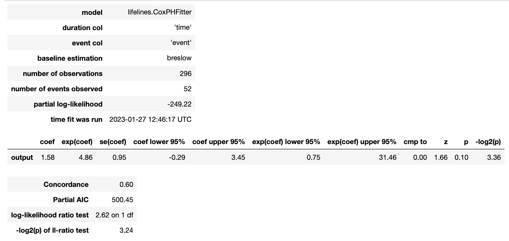

Corresponding author: Hans Pinckaers, Radboud University Medical Center, Postbus 9101, 6500 HB Nijmegen, The Netherlands (tel +31 634 856 950, hans.pinckaers@radboudumc.nl)
a Department of Pathology, Radboud Institute for Health Sciences, Radboud University Medical Center, Nijmegen, The Netherlands
At our hospital, we collected a cohort of patient of 903 patients which underwent prostatectomy, with follow-up information. Primary endpoint for this cohort was biochemical recurrence. This dataset, collected by the Urology department recorded biochemical recurrence by monitoring ordered lab tests of included patients. Patients treated in the hospital, between 1992 and 2012 were included. These tests were ordered by treating physicians in the hospital, or outside by general practitioners. Generally, after one year of follow-up, patients were transferred to their general practitioner for monitoring.
Tissue slides were picked from the hospital archive containing the highest grade tumor, based on the pathology reports. Slides were scanned into whole-slide images on a 3DHistech P1000 scanner, at 0.25mu/px resolution. The number of slides ranged from 1 to 9 per patient, with a median of two slides. Before streaming the slides, the tissue on the slides was combined to create one image with all the tissue. This could result in multiple gigapixel-sized images.
We divided this cohort into three sets; a train set, consisting of 257 patients (with 45 biochemical recurrence events), a limited validation set (110 patients, 19 events) and a hold-out set (296 patients, 52 events). Due to scanner or corrupt whole-slide image files, we had to exclude an additional four patients.
We leveraged the streaming implementation of chapter 2 to optimize a imagenet-pretrained ResNet34 with a attention-based regression head, following Dooper, et al.[cite Stephan Dooper, CLAM]. Between the regression had and the ResNet34, we reduced the dimensionality of the feature map with a 4x4 maxpool layer.
We divided the training into two phases. In the first phase, we only optimized the attention head with the ResNet frozen. During training, we cropped the images to one gigapixel (32768), to speed up and regularize the training. We used SGD-momemtum with a learning rate of 3e-6, streaming tile size 7680, the minitbatch-size was 20. The first phase converged after 300 epochs. We optimized towards time-to-event following chapter 4, using the Huber loss.
The second phase started by unfreezing ResNet34. We slightly dropped the learning rate to 1e-6. The network began overfitting around 10 epochs, we picked the checkpoint at epoch 8 for evaluation. We used weight averaging of the last five epochs as explained in chapter 3.
Given time constraints, we couldn’t perform further hyperparameter tuning or experimentation.
 
Univariate Cox proportional hazard analysis, gives a hazard ratio of 1.83 with a p-value of 0.10, with an output range of 0 to 2.6. Normalizing the range gives a hazard ratio of 4.86. The concordance is 0.6.
TODO: multivariate
Figure 2 shows the concordance of a CoxPH statistical analysis using the neural network output.


This work in progress explored the hypothesis that whole-slide images can be used to predict prognosis. We analyzed whole-slide images of a population cohort of patients who had undergone prostatectomy. We attempted to predict the time to biochemical recurrence for these patients. Although we could not achieve statistically significant results due to the size of the dataset, there was a discernible signal in the slides. Using explainability methods, we demonstrated that the network focuses on the tumor.
Future work could focus on using survival based losses.
As shown in Figure 2, in agreement with chapter 2, training with a small dataset of very high-resolution images was remarkably stable.
This preliminary assessment lays the groundwork for fully learning end-to-end, clinically interesting endpoints from histology images while harnessing the full potential of neural networks to find relevant features without manual feature engineering. One could argue that working on patches adds assumptions to the task and lacks context due to cropping the slide. However, deep learning has shown that neural networks can learn these assumptions and signals themselves, given enough data and appropriate labels.
Acknowledgments
Wouter Bulten
References